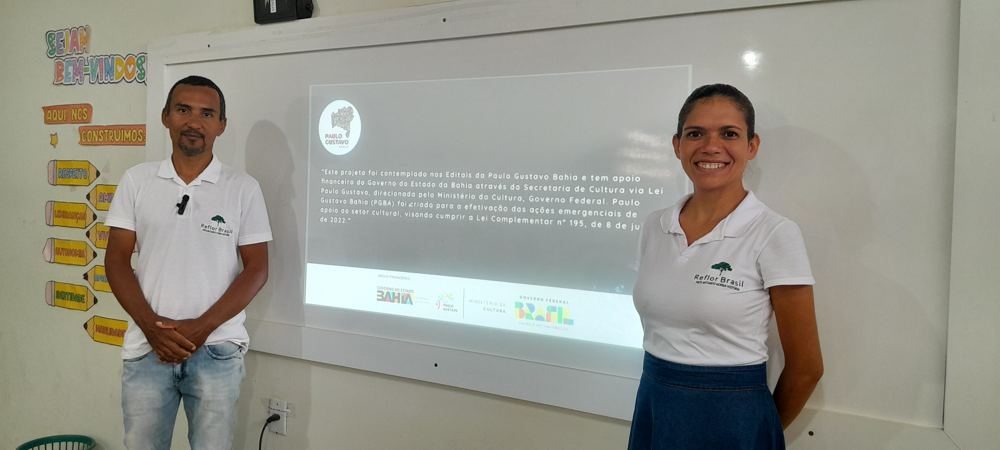
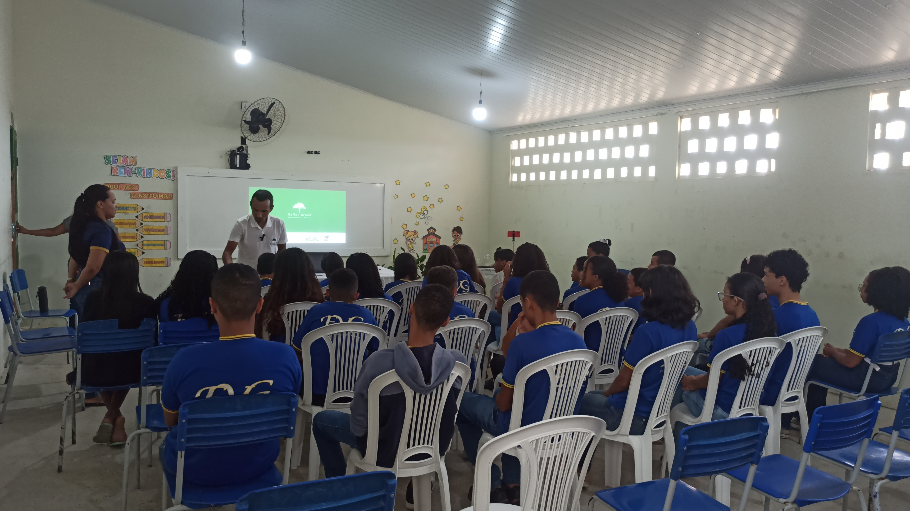
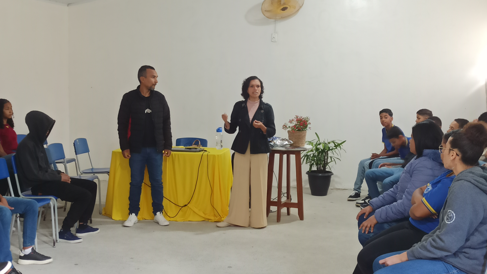
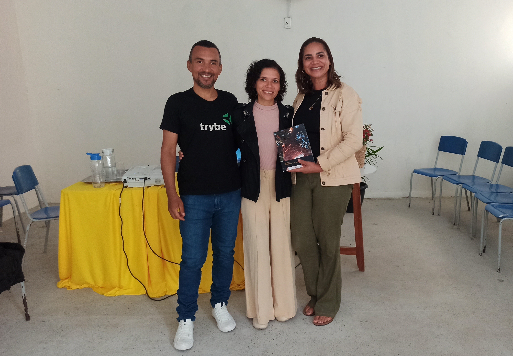
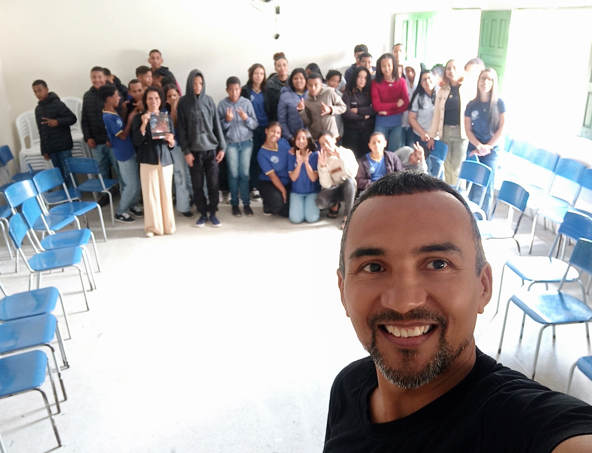

A palestra realizada na Escola Vicenzo Gasbarre teve como objetivo promover uma reflexão sobre a importância da árvore pau-brasil para a identidade nacional, destacando sua relação direta com o nome "brasileiro". Muitos estudantes desconheciam essa conexão histórica e simbólica, o que tornou o momento ainda mais significativo. A atividade contou com o apoio da comunidade escolar e buscou despertar a consciência ambiental e cultural dos alunos, reforçando a valorização de um símbolo essencial da nossa história.


Neste bate-papo com as turmas do sétimo ano, compartilhamos a história da iniciativa Reflor Brasil e o
impacto causado nas escolas que receberam o projeto. Incentivamos os alunos a investirem em seus
talentos e não "engavetarem seus sonhos".
Foi muito satisfatório interagir com eles e responder aos seus questinamentos.
A professora Cleusa incluiu nosso livreto "Brasil, MOstra a Tua Árvore" em atividades com a turma,
incentivando os alunos a se aprenderem sobre sua identidade como brasileiros e a valorizarem a
importância da árvore pau-brasil. Nosso encontro foi um sucesso!


